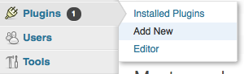
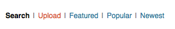
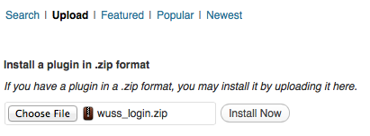
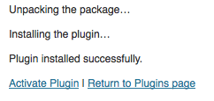
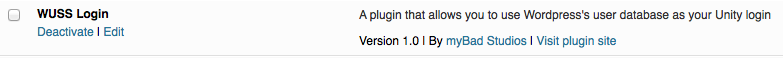

1. QUICKSTART
Thank you for buying the Wordpress User Login kit.
In this quickstart section I will show you exactly how easy it is to get started using this kit..!
- Upload, install an activate the included wuss_login.zip file as a new plugin for your existing Wordpress website (instructions at the end of this document)
- Install the myBad Studios Core product if you haven't done so already
- Install the Wordpress User Login kit
- Find the WULogin prefab and enter your website's URL into the field named online_url. Make sure not to include the trailing "/".
- Either open up the demo scene or drag the prefab into a new scene
And that is that. You are now ready to hit play and see the kit in action!
A note on requirements
- This kit requires that you have a working Wordpress website and that you have authority to upload and install plugins to that website. I will not be offering any assistance in Wordpress website setup or maintenance. If you encounter any problems with your website, please consult the Wordpress website and forums.
- This kit uses the myBad Studios Core kit for most of it's functionality. To avoid any nasty errors and surprises when installing this kit, please make sure to have the myBad Studios Core package installed before you install the Wordpress User Login kit.
2. About the kit...
The Wordpress User Login kit was designed for drag and drop functionality and as such it doesn't have much that you can customize. You can modify the WULoginSkin to make the kit fit into the look and feel of your game and you can always go into the prefab and change the layout and positioning of the buttons and fields but Wordpress plugin you installed requires some very precise info to be sent to it so there really isn't much you can modify apart from the look and feel.
Having said that, though, the kit was also designed to be display agnostic and merely includes an OnGUI prefab because that is what I am most comfortable working in. The graphics that you see when you activate the prefab is only a front end that calls the actual functions within a separate class. This means that if you want to make a game for mobiles and want to use NGUI instead of OnGUI, you are free to do so.
You will find that included in this kit is a very complicated class called TabbedServerDataCapture which contains a bunch of TabbedServerDataCapturePage elements which in turn consists of a bunch of ServerDataCapture elements. This entire monster of a system that I created to present you with this drag and drop accounts solution does only two things:
- Get user input into TextFields
- Call the actual code that does the actual work
The actual code that does the actual work of logging you in, fetching your account details and resetting your passwords and all of that... they are each only 1 line of code. That is all. You collect the data, add them all to a cmlData variable and then call a single function with that cmlData variable as a parameter and you are done. That simple. So if you want to use NGUI, do so... Simply collect the info from your users and have your GUI call the appropriate function after you've collected the required info.
Done!
Available functions
| Following are the functions that you can call from within your own gui... | |
| void RegisterAccount(cmlData fields) | |
| Fields required: | username, password, email |
| void ResetPassword(cmlData fields) | |
| Fields required: | login (The value should be either a username or an email) |
| void ChangePassword(cmlData fields) | |
| Fields required: | password, passnew |
| void AttemptAutoLogin() | |
| Fields required: | n/a |
| void LogOut() | |
| Fields required: | n/a |
| void AttemptToLogin(cmlData fields) | |
| Fields required: | username, password |
| void FetchPersonalInfo() | |
| Fields required: | n/a |
| void UpdatePersonalInfo(cmlData fields) | |
| Fields required: | fname, lname, nname, dname, jabber, aim, yim, email, website, descr |
3. Making it work with your game
It might all be good and well that the kit is so easy to setup but how do you actually make it functional in your project? That has got to be the most important question you could possibly have right now. Well, in order to make this kit as simple as possible to use, I've designed it to use callbacks. As such, at the start of your project or whenever your project requires it, simply register a function to respond to the callback for your selected function and then, when the function has run it's course, it will call your function for you, allowing you to do anything you wish form there on...
For people new to callbacks I am sure that must sound like absolute Greek so allow me to demonstrate. You will find, included in the project, a file named CustomAccountClass.cs. This file demonstrates how easy it is to hook your own code into the WUL kit.
public WULoginGUI
wu_login;
void Start()
{
if (null == wu_login)
{
Debug.LogError("Not connected to the WULogin prefab");
return;
}
wu_login.onLoggedIn += OnLoggedIn;
wu_login.onLoggedOut += OnLoggedOut;
}
void OnLoggedIn(object data)
{
Debug.Log ("Yeah! Logged in! Now I can load my level!");
}
void OnLoggedOut(object data)
{
Debug.Log("Oh, no! Like, game over, yo. Time to load the main menu scene");
}- First thing you need to do is create a variable of type WULoginGUI and drag the WULogin prefab from your scene into that.
- Next, define what callback you want to listen to by adding a custom function to it
- Create your function and do whatever you want to do
That simple. No need to modify even one line of code in the WUL kit and it is functional in your project.
Following are the callbacks that you can hook into to perform custom actions... | |
| onRegistered | |
| Fields returned: | success (bool) |
| onReset | |
| Fields returned: | success(bool), +email sent to user |
| onPasswordChanged | |
| Fields returned: | success(bool), logged in(bool) |
| onLoggedIn | |
| Fields returned: | nickname(string), displayname(string) |
| onLoggedOut | |
| Fields returned: | success(bool) |
| onAccountInfoReceived | |
| Fields returned: | fname(string, lname(string), nname(string), dname(string), email(string), website(string), descr(string), aim(string), jabber(string), yim(string) |
| onInfoUpdated | |
| Fields returned: | success(bool) |
4. Installing the plugin in Wordpress
| Step 1. Log into your Wordpress dashboard and select "Add new" from the Plugins menu |  | |
| Step 2. At the top of your screen, select "Upload" |  | |
| Step 3. Find the wuss_login.zip file in Assets/myBad Studios/WUSS/Wordpress/Plugins and upload that to your website. |  | |
| Step 4. After it is uploaded it will ask you to activate the plugin. Do so and you are done... |  | |
| Step 5 | ||